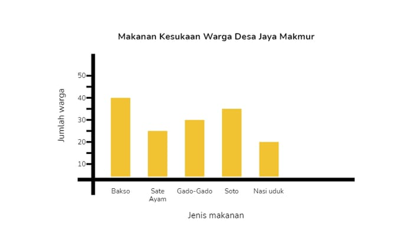
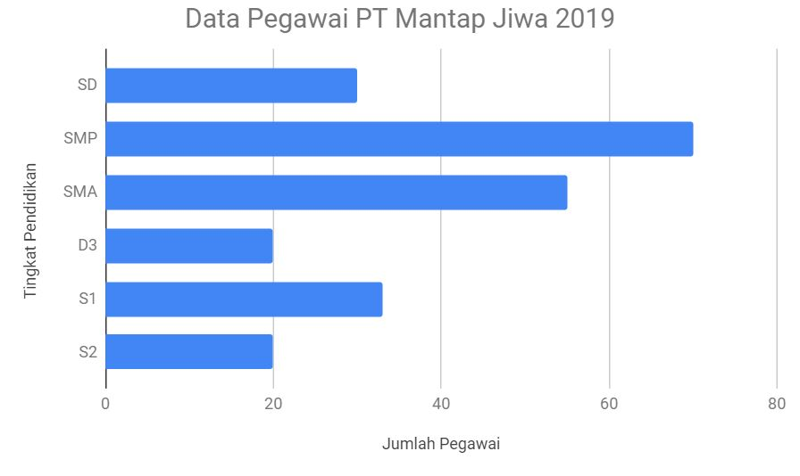
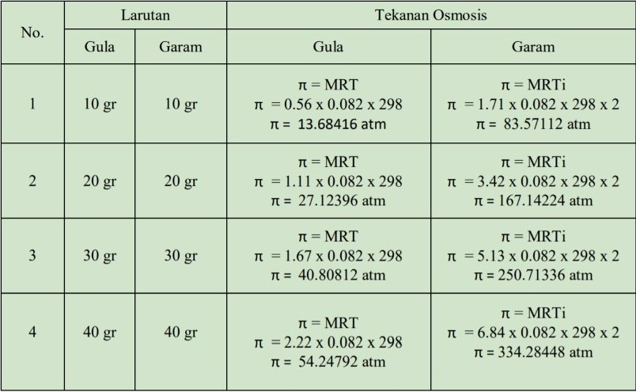
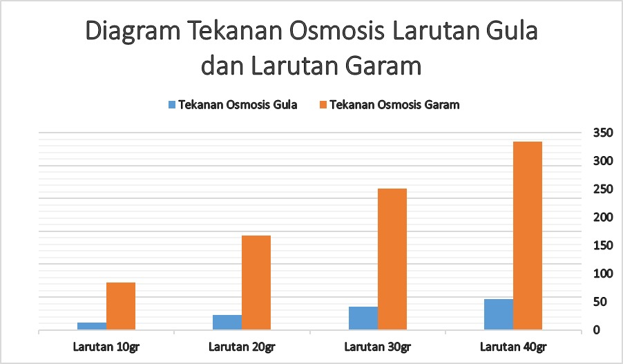

Judul Praktikum : Menganalisis diagram batang terhadap tekanan osmosis
Mata Pelajaran : Fisika, Biologi, Kimia, Matematika, Coding
Hari/Tanggal : Kamis / 10 Februari 2022
Waktu : 08.00 - 12.30 WIB
Tujuan Percobaan : Menyajikan data berupa tabel, grafik cartesius, diagram batang, diagram garis, histogram, atau ogive dan mengambil kesimpulan dari hasil data percobaan osmosis pada kentang menggunakan larutan garam dan gula.
PEMBAHASAN
Definisi diagram batang :
Diagram batang adalah grafik yang tersusun dari kolom berbentuk batang (persegi atau persegi panjang) yang meninjukkan berbagai informasi. tujuan dibuatnya diagram batang adalah untuk menyampaikan informasi kuantitas suatu kategori tertentu agar lebih mudah dipahami trennya. Data pada awalnya ditampilkan dalam bentuk tabel, namun tabel sedikit lebih sulit untuk dibaca. Sedangkan pada diagram batang terlihat jelas mana data yang paling besar, data yang paling kecil, tren data, dan analisis kuantitaif lainnya hanya dengan melihat diagram batang tersebut.
 
1. Tabel

Sumber data :
Larutan 10 gr : Pengamatan pribadi
Larutan 20 gr : Ferry Febrian Lim
Larutan 30 gr : Octalianny Halim
Larutan 40 gr : Steven Yong
2. Diagram batang

Dari data hasil percobaan 4 konsentrasi larutan gula dan garam, Sajikanlah data berupa tabel, grafik cartesius, diagram batang, diagram garis, histogram, atau ogive dan tariklah kesimpulan dari hasil data percobaan tersebut dengan hasil tekanan osmosis yang diperoleh!
Berdasarkan data pada diagram dan tabel diatas, dapat disimpulkan bahwa tekanan osmosis larutan berbanding lurus dengan berat garam dan berat gula. Semakin berat gula dan garam, maka akan semakin besar juga larutan osmosisnya. Tekanan osmosis larutan garam memiliki nilai yang jauh lebih besar dibanding tekanan osmosis gula karena larutan garam bersifat elektrolit sehingga perlu dikalikan dengan faktor van’t Hoff yang menyebabkan nilai tekanan osmosis garam lebih besar.